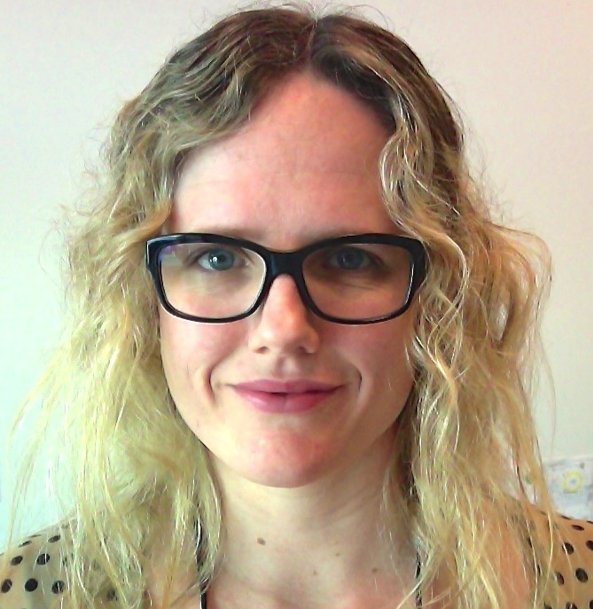

Kristin Anne Camarena

(805) 296-0941
Kristin.Camarena@gmail.com
908 36th Ave, Oakland, CA 94601
Specialties
Operations Management | Financial Management | Quantitative Analysis | Facilities Management | Project Management |
Laboratory & Office Fit-Up & Move Planning & Execution | Safety Programs | Strong Leadership | Procurement | Incentive Alignment | Human Resources | Information Technologies | Negotiations | Strategic & Tactical Planning | Process Development & Improvement | Technical Writing | Laboratory Management | Manufacturing Management | R&D
Education
Master of Business Administration with emphasis in Finance & Analytical Marketing, September 2009-June 2012
University of California at Davis, Graduate School of Management
Beta Gamma Sigma Membership (Graduated in top 20% of Business School Program)
Bachelor of Arts in Molecular, Cellular, & Developmental Biology, September 1998-June 2002
University of California at Santa Cruz
Graduated with Honors in Major
Professional Experience
Lawrence Berkeley National Laboratory, January 2012-current
Operations Manager/Program Manager 3
Oversee Operations for the Joint Center for Artificial Photosynthesis at the Berkeley, CA site.
Supervise (direct and matrix) a staff of operations professionals for budget preparation/financial reporting (up to $10.5M/year), facility management, event planning, travel, procurement, safety compliance, IT, and HR.
Serve as a liaison between LBL Operations and the approximately 100 JCAP researchers consisting of Faculty/PIs, postdoctoral scholars, UCB graduate students, and technical staff from a diverse set of disciplines including chemistry, material science, physics, and engineering.
Managed the fit-up and move planning to relocate the JCAP project (which includes $10M in equipment) from South Berkeley to Chu Hall, a $59M UCB building at the LBL campus, in April 2015.
Progentech/GenturaDX (acquired by Luminex in 2012), 2008-2011
Pilot Manufacturing Manager, April 2010-April 2011
R&D Laboratory Manager, June 2008-April 2011
Supervised 6 manufacturing employees in the production of a proprietary integrated purification and PCR molecular diagnostic cassette for research and commercial development.
Forecasted raw material needs, allocated resources, authored SOPs, implemented procedures, planned production, created bill of materials, and managed schedules for pilot manufacturing plant.
Oversaw the execution of study plans for product stability, verification, robustness, and trouble-shooting.
Space planning and move coordination to relocate GenturaDX from Emeryville, CA to Hayward, CA.
Created and maintained an Access database in lieu of a formal ERP system to track order information for capital purchases and routine expenses.
Santa Cruz Biotechnology, 2002-2008
siRNA Synthesis Lab Manager, February 2008-June 2008
Managed a group of 5-7 researchers in automated synthesis of approximately 1,000 synthetic RNA molecules per week in a sterile, RNase free environment.
Peptide Sequence Design Group Manager, 2006-June 2008
Managed a group of 3-4 research designers that created unique peptide sequences using NCBI databases and proprietary company criteria.
Peptide Synthesis Lab Manager, March 2003-June 2008
Managed a group of 8-10 researchers in the process of automated synthesis, purification, and analysis of over 17,000 peptides annually in a seven day per week operation.
Worked closely with the purchasing department to evaluate vendors, provided an annual forecast for raw material needs, and controlled the inventory for the two high-production laboratories under my management.
Oversaw the design and successful synthesis of peptides representing all protein-encoding genes of human Chromosome 21.
Designed FileMaker Pro databases, reduced hazardous waste production, and optimized processes that created a yearly operating savings of $250K.
Key founding member of the company Google Search Engine Optimization team.
Assisted with space planning and move coordination to relocate the Peptide Synthesis Lab and siRNA Synthesis Lab from Santa Cruz, CA to Paso Robles.
Peptide Antibody Production Research Assistant, December 2002-March 2003
Purified, analyzed, and packaged resesarch antibodies derived from goat and rabbit sera.